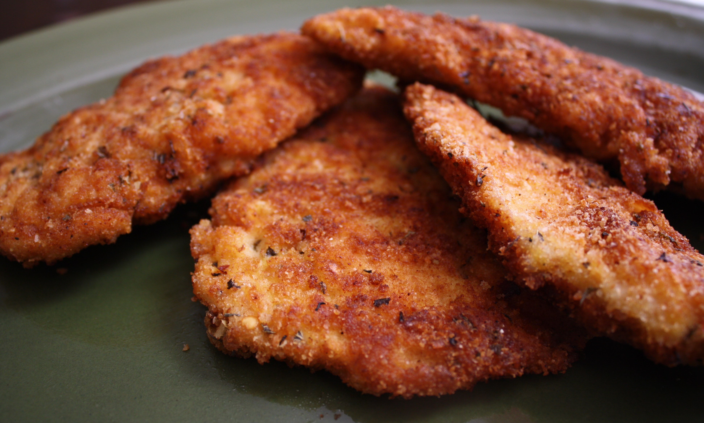

Chicken Cutlet Recipe

Old-fashioned breaded chicken cutlets! This traditional recipe for chicken
cutlets is a labor of love, but they are well worth the effort
Ingredients
- 4 (4oz) boneless, skinless chicken breast. 1/2 inch thickness
- 1/2 cup salt
- 1/2 cup white sugar
- 8 slices crustless bread, torn into large pieces
- 1/4 cup dried parsley
- 3/4 cup all-purpose flour
- 2 large eggs
- 3/4 cup olive oil, divided
- salt and ground black pepper to taste
Directions
-
Step 1Preheat oven to 200 degrees F (95 degrees C). Place a large
oven-proof plate on the bottom rack
-
Step 2Dissolve salt and sugar in water in a 1-quart casserole
dish. Place chicken in the marinade. Cover and refrigerate for 30
minutes
-
Step 3Pat chicken dry and place on a paper towel-lined baking
sheet. Let air-dry for 10 minutes
-
Step 4Place bread in a blender or food processor; blend until
crumbly, about 30 seconds. Mix bread crumbs with parsley in a shallow
dish
- Step 5Place flour in a shallow dish
-
Step 6Beat eggs with 1 tablespoon olive oil in a separate shallow
dish
-
Step 7Season chicken with salt and pepper. Dredge each cutlet in
the flour, shaking off any excess; dip in the egg mixture and coat
evenly in bread crumbs
-
Step 8Heat the remaining oil in a nonstick skillet over medium
heat. Add 2 cutlets; cook until golden brown on the outside, no longer
pink in the center, and juices run clear, 2 to 3 minutes per side. An
instant-read thermometer inserted into the center should read at least
165 degrees F (74 degrees C). Remove warmed plate from the oven; placed
cooked cutlets on the plate. Repeat with the remaining chicken